『エヴァンゲリオン放送30周年記念特別興行』短編アニメに施されたフィルム由来っぽいブレが、TVシリーズと旧劇場版のどのカットから抽出されたものなのかを検証しました。各フレーム差分における並進成分の相関を使って照合した結果、
特別興行のカットがTVシリーズ22話cut78でレイとアスカがエレベータの中でずーっと止まっているあの有名カットを用いていることがわかりました。この記事では、その解析手順と一致結果をまとめています。
#なお、この記事内で引用した画像はすべて『エヴァンゲリオン放送30周年記念特別興行』短編アニメーション、新世紀エヴァンゲリオンTVシリーズ、及び劇場版DEATH(TRUE)2よりそれぞれの記載の該当箇所からです。
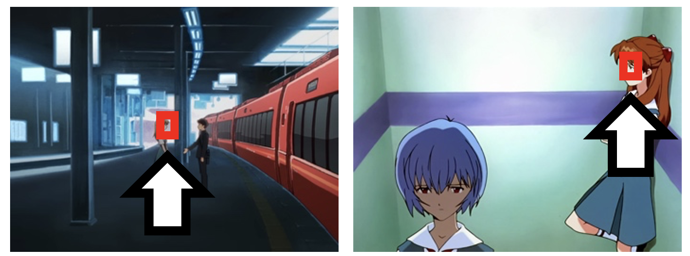 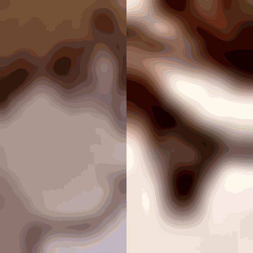
(株)カラー 2号機さんの 投稿(下記参照) において、『エヴァンゲリオン放送30周年記念特別興行』短編アニメーション(以下、特別興行) https://www.youtube.com/watch?v=t6ju8O7a89gでは、 当時の映像を素材として、当時のセル画の空気感を再現する工夫がなされていたことが公表されました。 また、 ペンだこさんの 投稿(下記参照) から、新世紀エヴァンゲリオンTVシリーズ、及び旧劇場版の長い止メのカットからフィルム由来のブレを抽出し、 それを特別興行に適用したことが推察できます。 この記事ではこれらのツイートから明らかになった、特別興行におけるブレが新世紀エヴァンゲリオンのどのカット、さらにどの部分から抽出されているのかを解析していきます。
まずは特別興行の動画全体を通して、どれくらい動いているかを見ていきます。 グレースケール化してちょっとだけガウシアンフィルタかけて、各フレームごとに前フレームとの差分をとってみます。 まずここから分かったのは、先のツイートにあるように旧映像っぽく見せたいカットでのみブレをいれていそうだぞ、ということです。 Fig. 1をみてわかるように、例えば冒頭のステージの止メのカット(二人のアスカがせり出してくるまで)は完全に止まっています。横軸は時間(秒)。13s-21sくらいまでのところです。
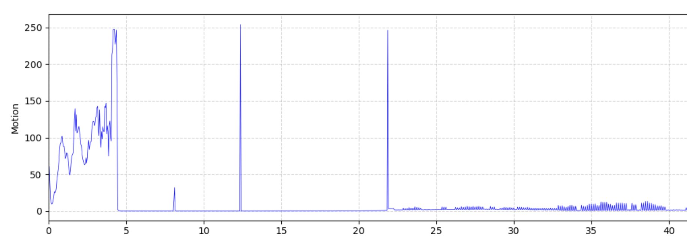
一方でFig. 2に示すようにアスカ一人でプラットフォームで待っているカット(600s-604sくらいまで)は止メのカットのはずなのに微妙に動きがあることがわかります。 さらにこの付近にはカットの中でのキャラや物体の動き(もともとのアニメーションの演技)の他にもそれらしい動きがたくさんあります。
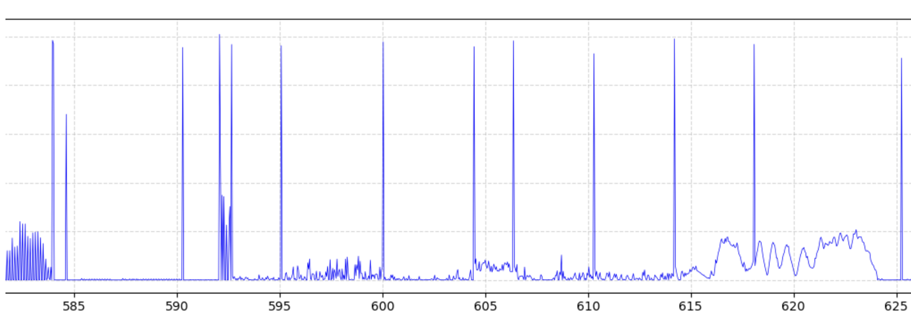
ここから分かった、止メあるいはそれに準ずるカットで、あえてブレを加えていそうなカットは下記Fig. 3。 他にもあるかもしれませんので、お気づきの方はお知らせください。 止メあるいはそれに準ずるカット、に限定したのはもともとのアニメーションの演技としての動きが入っているものはブレの抽出のための映像/画像解析が非常にやりにくいからです。 例えばわかりやすいのはちびアスカが走っているカット。こちらはおそらくあえてブレを加えていそうなカットなのですが、画面全体にもともとのアニメーションとしての動きが入っており、 この動きとブレの動きの切り分けが難しいため候補から除外しています。 一方で、画面の一部にもともとのアニメーションとしての動きが入っているカットについては、動いていないキャラの一部分や背景部分を使ってブレを抽出することができます。 また、ちびアスカの2カットにあるようなかなりゆっくりとズームイン、ズームアウトするようなカットについては画面の中央部分を解析対象にしています。
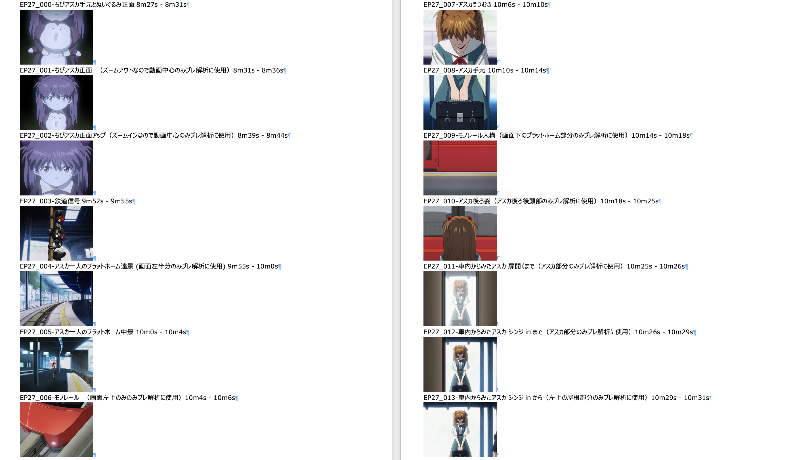 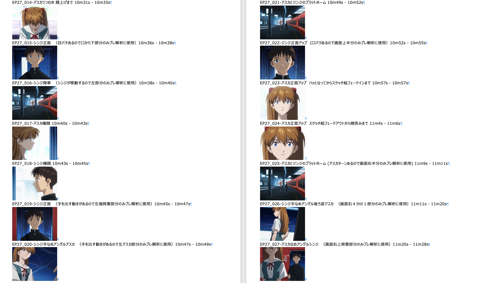 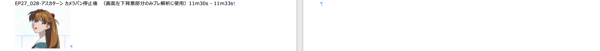
次に、先のペンだこさんの投稿画像に合ったヒントから、ブレを抽出したであろう旧映像の3カットをもってきます。 それぞれ長い時間の止メカットとして記憶に残っている方も多いかと思いますが、一応補足しておくと 左上：初号機握りつぶしのカットは24話、 右上：エレベータのカットは22話、 下：うつむきシンジと立ちミサトは劇場版DEATH(TRUE)2、 からです。 うつむきシンジと立ちミサト、これはTVシリーズ4話にもあったのでは？ と思う方もいらっしゃると思いますがこのヒントに貼られているのは劇場版DEATH(TRUE)2用の新作カットです。(私は今回調べて初めて気が付きました) これはこのヒントの画像が上2枚が4:3、下が16:9になっていることからもわかります。 初号機握りつぶしとエレベータ、これは4:3なのでおそらくTVシリーズからだと思いますが、劇場版DEATH(TRUE)2は総集編パートがあり そこにも含まれているためこれらも解析対象とします。 ということで元データとなるブレを抽出したであろう旧映像カットは下記Fig. 4。
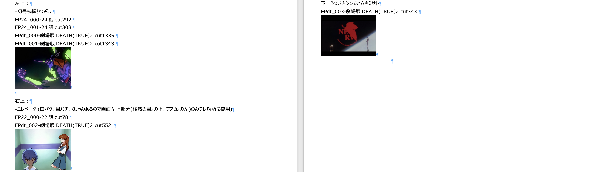
これらのカットからブレについての情報を抽出していきます。 まずは各カットのフレーム間でどれくらいの回転、並進が起きているかを確認しました。 ここで回転成分が大きいと解析が面倒だなあと思っていたんですが、高々0.2degほどであることが確認できました。 ということで回転は一旦無視できることにしてしまって並進だけに注目します。 並進成分$dx, dy$に分割できますが、軽く確認したところ特別映像のブレと旧映像のブレは動いた量の絶対値が結構違いそうな印象なので、 この$dx, dy$を極座標$\theta, r$に変換します。つまり移動方向と移動量です。
ここで移動方向$\theta$の$-\pi$rad(-180度)付近のデータは処理方式によっては$\pi$rad(+180度)に簡単にスイッチしてしまいノイズになりかねないので、 -3rad以下の値は纏めて$\pi$radにまとめています。
こうしてできたデータがたとえばこんな感じFig. 5。上がブレの移動方向、下が移動量。 ここでは前述のEP27_000 ちびアスカ手元とぬいぐるみ正面 8m27s - 8m31s のデータです。
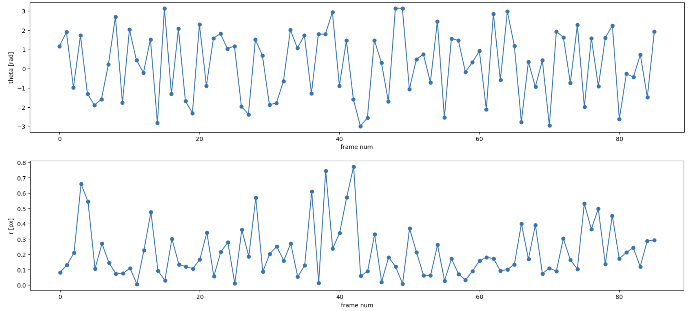
いよいよ特別興行のデータと旧映像のデータを比較して、ぴったり合いそうなところを見つける作業。 特別興行の映像におけるブレが旧映像のどこから来たかを探していきます。 どの組み合わせにおいても、特別興行のカットの長さ<旧映像のカットの長さとなっているので、 特別興行の各カットの長さで移動窓を切り、旧映像のデータのそれぞれの位置で相関を取って探していきます。 1つのカットから移動方向と移動量2つのデータが得られ、それぞれの相関を見ていって、移動方向と移動量同じところでピークが立てばそこが 探していた元データ、という判定を行いました。
ということで上記の判定基準に則って元データの所在が分かった特別興行の各カットをまとめたものが下記 Fig. 6 です。 元データと判定されたものはすべて、22話cut78 エレベータ からのみとなりました。 ヒントにあった初号機握りつぶしのカット、及び うつむきシンジと立ちミサトのカットからは元データとなった候補は挙がってきませんでした。
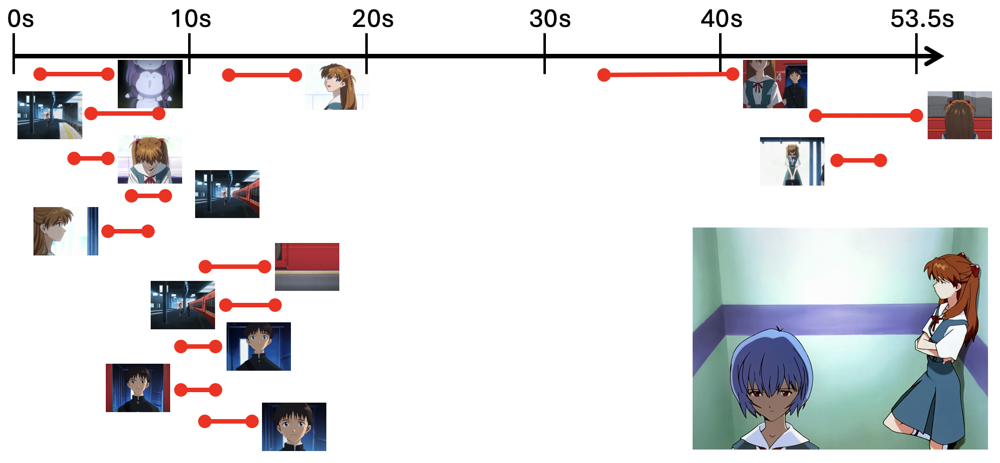
これらの中でもこれはバッチリ一致しているなあ(見た目)となったのが EP27_021 アスカとジンジのプラットホーム(特別興行10m49s - 10m52s)です。 ここのブレの元データとなっている旧映像はTVシリーズ22話cut78 エレベータ のカットにおける 11.7s - 15.0s であることがわかりました。 この結果をFig. 7に示します。
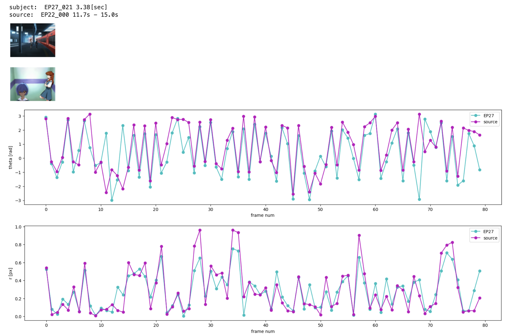
また、該当カットを特定した時間部分で切り出し、拡大して比較したものが一番上で示したFig. 0 です。 見やすいように通常24fpsのところ3fps、つまり1/8倍速での再生となっています。小さな誤差はあるものの概ね同調して動いていることがわかります。
ということで最初に述べた、『エヴァンゲリオン放送30周年記念特別興行』短編アニメーションにおけるブレ表現の元データ解析ができました。 すべてのカットに対して元データが分かったわけではないものの、いくつかのカットでブレの元データとなったカットとその抽出部分がわかりました。 一方でヒントに上がっていた旧映像の3カットのうち1カットしか候補として上がってこなかったのはなにか間違っている可能性もあり、そもそもブレの抽出方法が違ったのかも？という気もします。
最後に改善提案を。コマ数が少ないものほど雑な一致でもピックアップされやすいのでサンプル数に応じた処理ができると良いかもしれません。 また、そもそも移動量が小さいときにはどの方向に動いたかはさほど重要ではないはずなので、 移動量を重みとして移動方向にかけて1次元の変数にしてあげるとかすると結果が変わったかもしれません。 あとは解像度でしょうか。先の投稿やその関連するものを見るとマスターデータを使っているようですので、 もっと高解像度のデータで上記処理を行うと違った結果になるかもです。
とはいえここまでやってみて、ランダムな時系列データを持ってきてそれなりに上手くはまったところをたまたま抜き出してるだけ、という可能性も排除できません。 移動方向と移動量同じところで相関のピークが立っているのを判定基準にしているのでまあまあ厳しい条件だとおもいますが。 このあたりは統計検定など使うとより良くなるかもと思っています。
もっといい方法があるぜ！とかのご意見や、実は内部ではこうやっていてですね...といった極秘情報などお待ちしております。